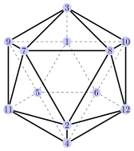

Variable Neighborhood Search (VNS)

ILS - A idéia geral
ILS - A idéia geral
A qualidade do ótimo local obtido pela busca local é muito dependente da escolha da solução inicial, como já havíamos mencionado. A idéia do ILS (Iterated Local Search - busca local iterativa) é gerar diversas soluções iniciais com alta variabilidade, e aplicar um componente de intensificação (como a busca local) em cada uma delas.
OBS: A primeira formalização e generalização do ILS está presente em: 2020 - Iterated local search - H. R. Lourenco, O. Martin, and T. Stutzle. In Handbook of Metaheuristics
ILS - A idéia geral
Na prática, o ILS não gera soluções aleatórias iniciais, mas sim aplica um componente de perturbação no ótimo local e reaplica a intensificação. Dessa forma busca-se manter alguma parte do ótimo local encontrado, porém “jogá-lo” para uma outra região do fitness-landscape.
No fitness landscape
Inicialmente geramos uma solução inicial.
No fitness landscape
E aplicamos um componente de intensificação (como a busca local).
No fitness landscape
Em seguida perturbamos o ótimo local, mandando-o a outra região do fitness landscape.
No fitness landscape
E o componente de intensificação é novamente aplicado.
No fitness landscape
O processo é repetido por um número determinado de iterações.
No fitness landscape
E sempre a melhor solução até o momento deve ser armazenada.
Pseudocódigo
Abaixo segue um pseudocódigo template do ILS.
Componentes de design
De forma geral o ILS possui 3 componentes de design:
- O método de perturbação: é o componente de exploração do algoritmo.
- Intensificação: é o componente de intensificação, pode ser uma caixa preta, ou seja, qualquer metaheuristica de solução única pode ser usada.
- Aceitação: critério que decide se a nova solução intensificada será usada na próxima iteração.
Componentes de design
A premissa do ILS é que a componente de perturbação deve ser mais eficiente do que um reinicio aleatório, onde uma solução independente aleatória seria gerada em toda iteração. Perturbando uma parte da solução garante que estaremos explorando o espaço de busca, mas em uma região não muito afastada do ótimo local.
Vale ressaltar que essa abordagem depende do fitness landscape, pode ser que um algoritmo com reinicio aleatório seja mais eficiente. Dessa forma, um primeiro exercício no design de um ILS é executar uma perturbação viesada e comparar com o reinicio totalmente aleatório.
Componentes de design
OBSERVAÇÃO
Podemos usar as próprias vizinhanças para o componente de perturbação. Por exemplo, para o TSP podemos perturbar uma solução com diversos movimentos SWAPS aleatórios. Uma boa decisão de design é usar uma vizinhança para a perturbação diferente daquela usada na componente de intensificação. Dessa forma a probabilidade de ciclagem das soluções é reduzida.
VNS - A A Ideia Geral
VNS - A Ideia Geral
Como no ILS, o VNS (variable neighborhood search - busca em vizinhança variável) tenta escapar de ótimos locais, porém parte das seguintes premissas:
- A escolha de uma vizinhança \(\mathcal{N}_1\) define um fitness landscape \(\mathcal{F}_1\).
- Todo fitness landscape possui um ótimo local.
- O ótimo global é um ótimo local, referente a alguma vizinhança \(\mathcal{N}_i\).
VNS - A Ideia Geral
Dessa forma, a ideia do VNS é explorar sucessivamente um conjunto pré-definido de vizinhanças. A busca é feita de forma aleatória ou sistemática no conjunto de vizinhanças (dando origem a variantes), obtendo diferentes ótimos locais. A forma mais comum de VNS é chamada de VND (variable neighborhood descent).
O VND é uma variante determinística do VNS. O VND usa sucessivas vizinhanças de forma descendente em buscas locais.
OBS: O VNS foi proposto em 1997 - Variable neighborhood search - M. Mladenovic and P. Hansen (Computers and Operations Research)
VND - A Ideia Geral
- Inicialmente é necessário definir um conjunto \(\mathcal{N}_l(l=1,...,l_{max})\) de vizinhanças. Seja \(\mathcal{N}_1\) a primeira vizinhança a ser usada, e \(x\) uma solução inicial.
- Se uma melhoria na solução \(x\) na vizinhança atual \(\mathcal{N}_l(x)\) não é possível, a estrutura de vizinhança é alterada de \(\mathcal{N}_l\) para \(\mathcal{N}_{l+1}\).
- Se uma melhoria na solução atual \(x\) é encontrada, retorna-se a estrutura de vizinhança \(\mathcal{N}_1(x)\), e a busca é reiniciada.
- O algoritmo termina quando nenhuma vizinhança \(\mathcal{N}_l\) melhorar a solução atual.
OBS: A estratégia do VND vai ser mais efetiva se as diferentes estruturas de vizinhanças usadas forem complementares entre si, no sentido de que o ótimo local para uma vizinhança \(\mathcal{N}_i\) não será um ótimo local para a vizinhança \(\mathcal{N}_j\).
VND - A Ideia Geral
Podemos visualizar esse processo mais facilmente por meio de um fluxograma.
VND - Fluxograma
A busca local é aplicada usando a vizinhança \(\mathcal{N}_1\)
VND - Dinâmica
Quando a solução não pode mais ser melhorada (ótimo local), troca-se para \(\mathcal{N}_2\).
VND - Dinâmica
Novamente, uma busca local é executada em \(\mathcal{N}_2\). Se a solução foi melhorada, volta-se para \(\mathcal{N}_1\).
VND - Dinâmica
Quando tanto \(\mathcal{N}_1\) quanto \(\mathcal{N}_2\) não melhorarem \(x\), ativa-se \(\mathcal{N}_3\).
VND - Dinâmica
A busca segue dessa forma, até o momento em que nenhuma vizinhança conseguir melhorar a solução \(x\).
VND - Dinâmica
A busca segue dessa forma, até o momento em que nenhuma vizinhança conseguir melhorar a solução \(x\).
VND - Fitness Landscape
Sejam as vizinhanças \(\mathcal{N}_1\), \(\mathcal{N}_2\) e \(\mathcal{N}_3\).
VND - Fitness Landscape
Sejam as vizinhanças \(\mathcal{N}_1\), \(\mathcal{N}_2\) e \(\mathcal{N}_3\).
VND - Fitness Landscape
Sejam as vizinhanças \(\mathcal{N}_1\), \(\mathcal{N}_2\) e \(\mathcal{N}_3\).
VND - Fitness Landscape
Com uma solução inicial \(s_1\)
VVND - Fitness Landscape
Aplicamos uma busca local em \(\mathcal{N}_1(s_1)\)
VND - Fitness Landscape
Quando o ótimo local é encontrado, ativamos \(\mathcal{N}_2\)
VND - Fitness Landscape
E intensificamos a solução.
VND - Fitness Landscape
Como \(\mathcal{N}_2\) produziu uma melhoria, voltamos para \(\mathcal{N}_1\)
VND - Fitness Landscape
E intensificamos novamente.
VND - Fitness Landscape
Novamente ativamos \(\mathcal{N}_2\), que não produz melhoria.
VND - Fitness Landscape
Ativamos então \(\mathcal{N}_3\).
VND - Fitness Landscape
E intensificamos, melhorando a solução.
VND - Fitness Landscape
Como houve melhoria, voltamos para \(\mathcal{N}_1\) (sem melhoria).
VND - Fitness Landscape
E em seguida para \(\mathcal{N}_2\) (sem melhoria).
VND - Fitness Landscape
Assim, nenhuma das vizinhanças produziu melhoria, de forma que o algoritmo é finalizado.
Pseudocódigo
Abaixo segue um pseudocódigo template do VND.
Exemplo - TSP
EXEMPLO: Implemente um algoritmo ILS para a resolução do TSP com as seguintes características:
- Intensificação: busca local com 2-opt
- Perturbação: SWAP e reinício aleatório (2 algoritmos diferentes)
EXEMPLO: Implemente um algoritmo VND para a resolução do TSP com as seguintes estruturas de vizinhanças: 2-OPT, SWAP e 1-SHIFT (leia no artigo) 1993 - Further results on the probabilistic traveling salesman problem- Bertsimas
Use as instancias do TSPlib para verificar a sua eficácia. Lembre de rodar diversos testes para calibrar os parâmetros do algoritmo.
Atividade I
- Qual o principal componente do ILS que o permite sanar a deficiência da busca local?
- Quais são os parâmetros do ILS que devem ser calibrados?
- Qual o principal componente do VND que o permite sanar a deficiência da busca local?
- Considerando o artigo 2000 - A study of exponential neighborhoods for the Traveling Salesman Problem - Daineko, Woeginger, entenda como funciona a vizinhança ASSIGN. Qual é a relação da vizinhança com o problema da designação? Faça um esboço de como isso funciona.
- Considerando os pseudocódigos do ILS e do VND. Pense em um design de algoritmo que combine características dos dois algoritmos.
Atividade I
Atividade II
- Considerando o seu problema escolhido para a disciplina. Encontre 2 artigos científicos que usam ILS ou VND (ou usam ILS/VND como uma parte de outro algoritmo) para resolver o problema.